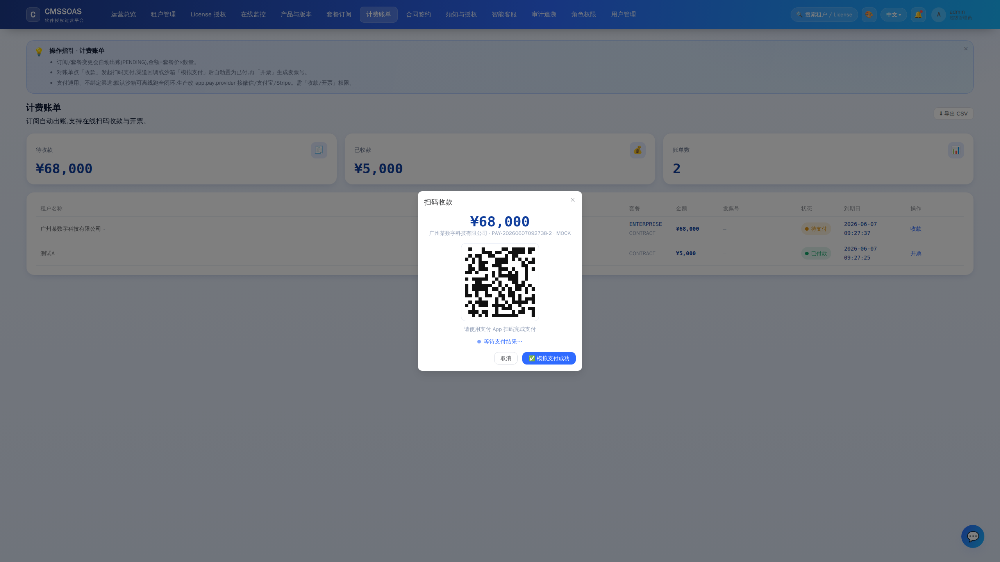
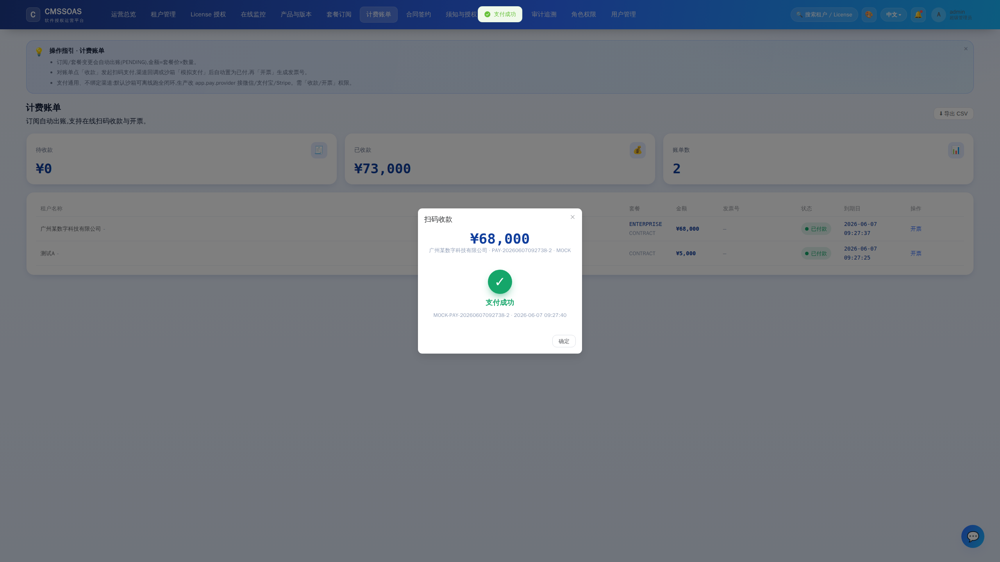
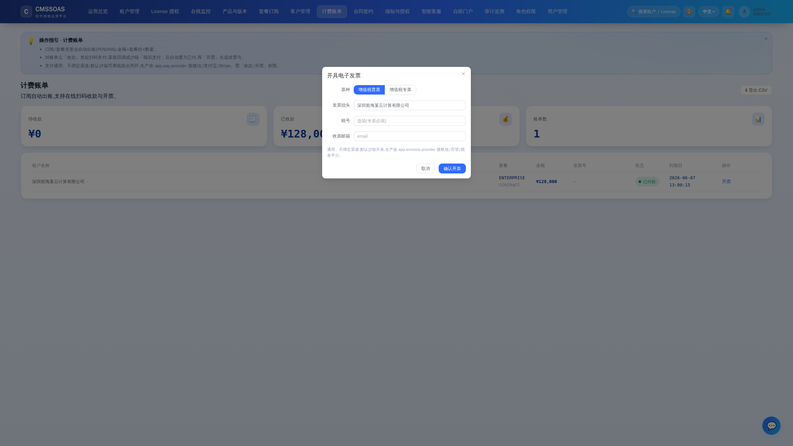

文档首页 / 功能说明：在线支付 / 收款闭环(通用 · 不绑定渠道)
功能说明：在线支付 / 收款闭环(通用 · 不绑定渠道)
补齐"计费账单"的商业闭环:从待支付账单发起扫码收款 → 渠道异步回调/沙箱模拟支付 → 账单自动收款(PAID), 全程幂等。沿用平台一贯的"provider-agnostic + 可降级"思路:PaymentProvider 薄抽象,默认沙箱离线可跑, 生产换渠道只改配置不改代码。
数据模型 / 迁移
V14__payment.sql 新增 payment 表(payment_no/invoice_id/amount/channel/status/qr_content/pay_url/provider_txn_id/…)。 复用 billing 权限,无新增权限点。
流程
- 「计费账单」对 PENDING 账单点「收款」→
POST /api/payments {invoiceId}创建支付单并向渠道下单,返回二维码内容/收银台链接。 - 前端弹出扫码收款窗(金额、二维码、轮询状态)。
- 真实渠道异步回调
POST /pub/payments/notify/{channel}(公开,验签在 Provider 内)→ 校验通过置支付单 PAID;
或沙箱点「模拟支付成功」POST /api/payments/{id}/sandbox-confirm。
- 支付成功 → 联动账单收款(Invoice PENDING→PAID,幂等),前端轮询到 PAID 显示成功并刷新。
- 之后可继续「开票」生成发票号。
通用化设计
- 抽象
PaymentProvider { channel, sandbox, create, verifyNotify };默认实现MockPaymentProvider(沙箱)。 - 配置驱动:
app:
pay:
provider: ${PAY_PROVIDER:mock} # mock(沙箱) | wechatpay | alipay | stripe
notify-base-url: ${PAY_NOTIFY_BASE_URL:} # 真实渠道异步回调可达的公网根地址- 接微信支付/支付宝/Stripe:新增一个
PaymentProvider实现(在create调用渠道下单 API、在verifyNotify验签),
把 app.pay.provider 切到对应 channel 即可,业务编排 PaymentService 与前端无需改动。
幂等与安全
markPaid对已 PAID 支付单直接返回;账单仅在仍 PENDING 时收款,回调重复投递安全。- 回调路径
/pub/payments/**公开但验签在 Provider 内;生产需保证notify-base-url公网可达 + 渠道证书/密钥经 env/Nacos/KMS 注入。
接口
| 方法 | 路径 | 权限 | 说明 |
|---|---|---|---|
| POST | /api/payments | billing:manage | 对账单发起收款,返回二维码/收银台 |
| GET | /api/payments/{id} | billing:view | 查询支付单(前端轮询) |
| GET | /api/payments | billing:view | 支付单列表 |
| POST | /api/payments/{id}/sandbox-confirm | billing:manage | 沙箱模拟支付成功 |
| POST | /pub/payments/notify/{channel} | 公开(验签) | 渠道异步回调 |
联调与测试
- 沙箱默认即可跑通全闭环(无需联网/账号)。真实渠道按上文新增 Provider。
- 自动化:
PaymentIntegrationTest(发起→模拟支付→账单收款→幂等;公开回调放行)。 - 功能截图:
web/console/shots/feat-09-扫码收款.png、feat-10-支付成功.png。
界面截图
 计费账单：出账、收款与开票一览
计费账单：出账、收款与开票一览

发起扫码收款（二维码 / 支付链接）
客户支付后到账核销
对已收款账单开具电子发票（普票 / 专票）